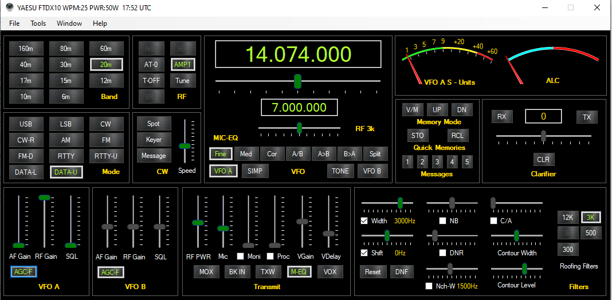
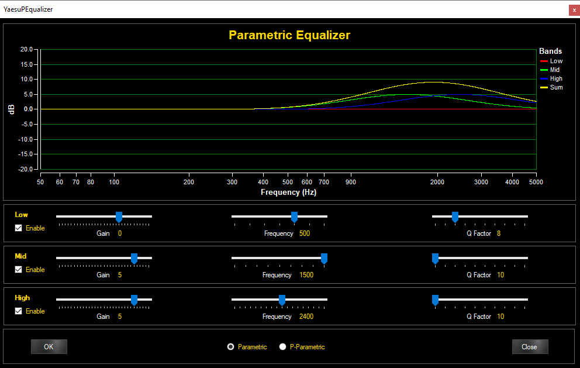

[Date Prev][Date Next][Thread Prev][Thread Next][Date Index][Thread Index]
Re: [NCDXC Chat] Software advise
Hi, Tony,As I said in my reply to Bob's inquiry about logging programs, I am using Win4Yaesu for rig control of my new FTDX10.The program is working great for me, and I use it every day. The support from Tom, VA2FSQ, has been top notch.It's a full featured rig control program, which also allows access to all of the radio menu settings.
A couple of other features that I like are: 1) The support for multiple 3rd party virtual serial ports, and 2) compatibility with HRD logbook server, and 3) The parametric microphone equalizer. This makes setting up your Tx audio equalization a breeze!
I've been able to remote desktop into my home PC, and control all of the functions of the radio remotely through Win4Yaesu.
You can download a trial version of the program.
73,RogerAC6BW
On Saturday, June 12, 2021, 8:11:52 AM PDT, Anthony Dowler via Chat <chat@ncdxc.org> wrote:
Good Morning Everyone, I hope you are all staying safe and getting your vaccinations. It's important! I just became aware of some control software called "WIN4YAESU" and would like to know more about it, if you use this program. The website indicates that it is compatible with the FTdx 101MP and sounds like a great add on for me. Your experience and advise is appreciated.
73 de, Tony K6BV
Past President NCDXC _______________________________________________
Chat mailing list
Chat@ncdxc.org
http://mail.ncdxc.org/mailman/listinfo/chat_ncdxc.org


{kind=link}
{kind=link}